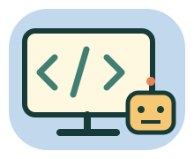

親子一起玩 · 小一～小二 · 不限時
科技任務基地
按按看、試試看，成為數位小幫手！

今天去哪一站？
每站 4 個任務，約 3～5 分鐘。可以隨時休息，先動手、再說說你怎麼想。
👨👩👧 家長陪玩小抄
先問一句
離開螢幕玩一次
先讓孩子操作、說理由；卡住給一個提示，不急著代答。陪玩不是考試，實作請由大人陪同。
冒險告一段落！
帶著發現回家
這是本輪操作紀錄，不是能力排名。試錯、觀察、能說出原因，也都是學習。
家長先看 · 範圍、語音與隱私
資訊科技小學堂：認識輸入輸出、儲存／改名／移動／複製、網路隱私與求助、排方向指令及除錯。所有檔案、訊息與機器人均為本頁預編的離線模擬，不存取你的真實檔案、帳號、密碼或裝置。沒有真正傳訊、拍照、錄音、下載或付款。不是完整課綱或資訊能力認證。
沒有帳號、廣告、排行榜或倒數；不儲存、上傳作答，重新整理即清空。回地圖會清空本輪。家長可朗讀，或按「聽題目」使用裝置語音；可用語音與是否需連線依裝置／瀏覽器決定，本頁不呼叫第三方語音服務。文字完整保留，不開聲音也能玩。
不必輸入真姓名、地址、密碼或驗證碼。遇到可疑訊息或已經交出資料，都可以立刻找信任的大人協助，不需要因怕被責備而隱瞞。家長離線示範時先說明權限，不拆電器、不公開其他人的資料。
原創關卡，非官方教材。免費延伸資源：Code.org 程式啟蒙、均一教育平台、PhET 互動模擬。可依孩子程度由家長選用，不是本頁執行依賴。